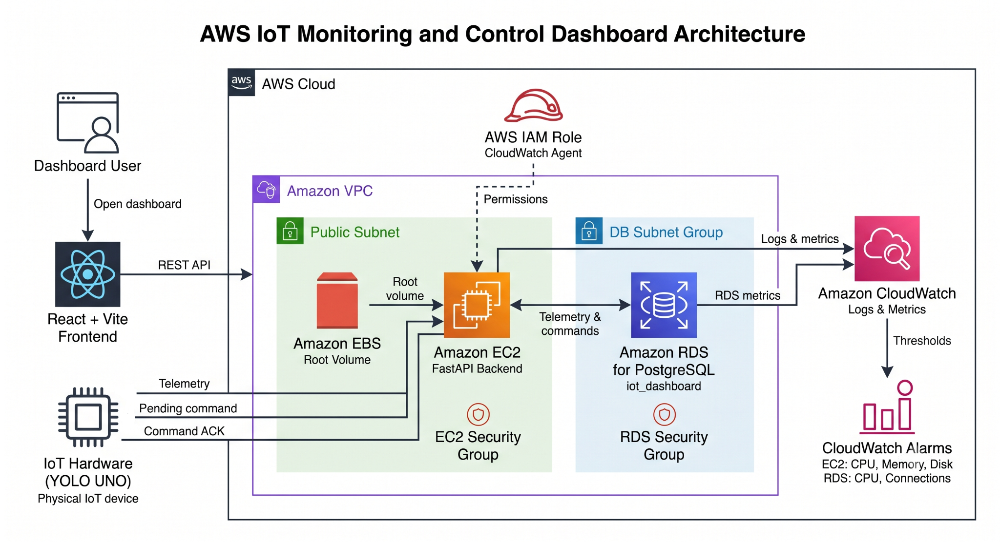

Hình 5-2. Sơ đồ kiến trúc từ kho mã nguồn ứng dụng, thể hiện ranh giới dịch vụ, kết nối EC2–RDS, giao tiếp HTTP của thiết bị và luồng giám sát qua CloudWatch.
Người dùng dashboard, React + Vite frontend chạy trên máy cục bộ và YOLO UNO nằm ngoài AWS. Trong AWS Cloud, VPC chứa public subnet dành cho EC2 và DB Subnet Group dành cho RDS. EBS là ổ đĩa gốc của EC2. Hai Security Group của EC2 và RDS kiểm soát lưu lượng mạng. IAM Role thuộc phạm vi tài khoản AWS, còn CloudWatch là dịch vụ theo khu vực; cả hai đều không nằm bên trong VPC.
| Thành phần/dịch vụ | Trách nhiệm và lý do |
|---|---|
| React + Vite + TypeScript + Tailwind CSS | Giao diện cục bộ cho người vận hành, hiển thị telemetry, điều khiển và đưa ra đề xuất dựa trên luật |
| Amazon EC2 | Toàn quyền cấu hình FastAPI, Python, Uvicorn và systemd |
| Amazon EBS | Ổ đĩa gốc lưu trữ bền vững, gắn với EC2 |
| Amazon RDS for PostgreSQL | Lưu telemetry và trạng thái lệnh theo mô hình quan hệ |
| Amazon VPC và subnet | Ranh giới mạng cho EC2 và DB Subnet Group |
| Security Group | Tường lửa có trạng thái cho SSH/API và lưu lượng từ EC2 tới RDS |
| AWS IAM Role | Cấp quyền tạm thời để EC2 gửi dữ liệu giám sát |
| CloudWatch Agent | Phần mềm trên EC2 thu thập metric của hệ điều hành khách và file log |
| Amazon CloudWatch/Alarms | Lưu metric/log và đánh giá các ngưỡng |
| YOLO UNO / ESP32-S3 | Đọc cảm biến, điều khiển thiết bị chấp hành, thăm dò lệnh và gửi ACK |
IAM Role có nhiệm vụ cấp quyền; nó không phải CloudWatch Agent. Agent là một tiến trình được cài đặt và quản lý trên EC2.
Dự án lựa chọn các dịch vụ AWS dựa trên bốn tiêu chí chính:
Không phải dịch vụ serverless nào cũng cần thiết cho bài toán này. Hệ thống hiện chạy FastAPI liên tục, kết nối PostgreSQL và giao tiếp với YOLO UNO qua REST API trên HTTP. Vì vậy, nhóm chọn Amazon EC2 và Amazon RDS thay vì thiết kế lại toàn bộ hệ thống theo Lambda, API Gateway và DynamoDB.
| Dịch vụ AWS | Vai trò trong hệ thống | Lý do lựa chọn | Đánh đổi |
|---|---|---|---|
| Amazon EC2 | Chạy backend FastAPI, Uvicorn và CloudWatch Agent | Cho phép chủ động cấu hình môi trường Python, thư viện phụ thuộc, cổng mạng, dịch vụ systemd và file log |
Nhóm phải tự quản lý hệ điều hành, cập nhật gói phần mềm, dịch vụ và một phần cấu hình bảo mật |
| Amazon EBS | Ổ đĩa gốc của EC2 | Cung cấp nơi lưu trữ bền vững cho hệ điều hành, mã nguồn, môi trường ảo và log cục bộ | Ổ đĩa không còn gắn vẫn có thể phát sinh chi phí nếu không được xóa |
| Amazon RDS for PostgreSQL | Lưu telemetry và trạng thái lệnh | PostgreSQL phù hợp với dữ liệu có cấu trúc và quan hệ giữa thiết bị, telemetry, lệnh; RDS giảm công việc quản trị so với tự cài PostgreSQL trên EC2 | Một cơ sở dữ liệu chạy liên tục có thể tốn hơn một số giải pháp serverless khi lưu lượng rất thấp |
| Amazon VPC | Cung cấp môi trường mạng cho EC2 và RDS | Cho phép kiểm soát subnet, định tuyến và kết nối giữa backend với cơ sở dữ liệu | Đòi hỏi cấu hình mạng và Security Group chính xác |
| Security Groups | Kiểm soát lưu lượng vào EC2 và RDS | Giới hạn SSH theo IP quản trị và chỉ cho phép RDS nhận cổng 5432 từ EC2 Security Group | Cấu hình sai có thể chặn kết nối cơ sở dữ liệu hoặc vô tình mở dịch vụ quá rộng |
| AWS IAM Role | Cấp quyền để EC2 gửi log và metric | Tránh lưu AWS access key trực tiếp trên EC2 hoặc trong mã nguồn | Policy phải tuân theo nguyên tắc đặc quyền tối thiểu |
| Amazon CloudWatch | Thu thập log và metric từ EC2, backend, RDS | Tập trung dữ liệu vận hành để quan sát và xử lý sự cố | Việc thu nhận log, thời gian lưu giữ và metric tùy chỉnh có thể phát sinh chi phí |
| CloudWatch Alarms | Theo dõi CPU, bộ nhớ, ổ đĩa và số kết nối cơ sở dữ liệu | Cảnh báo khi metric vượt ngưỡng vận hành đã cấu hình | Alarm chỉ hữu ích khi ngưỡng và khoảng thời gian đánh giá được đặt phù hợp |
FastAPI backend của dự án là một ứng dụng chạy liên tục và cung cấp nhiều REST API cho frontend và thiết bị YOLO UNO. Amazon EC2 phù hợp vì nhóm có thể:
systemd.8000.Amazon EC2 cũng giúp Workshop dễ trình bày hơn vì người học có thể quan sát rõ quá trình cài đặt backend, khởi động service, kiểm tra log và xử lý lỗi.
Đánh đổi chính là EC2 không phải dịch vụ được quản lý hoàn toàn. Nhóm vẫn phải cập nhật hệ điều hành, quản lý dịch vụ, kiểm tra dung lượng lưu trữ và bảo vệ SSH cũng như cổng backend.
Dữ liệu của dự án có cấu trúc và quan hệ rõ ràng:
Pending hoặc Executed.PostgreSQL phù hợp với các truy vấn có cấu trúc, việc kiểm tra trạng thái lệnh và lưu lịch sử telemetry. Amazon RDS giảm công việc quản trị so với tự cài PostgreSQL trên EC2, từ khởi tạo cơ sở dữ liệu, quản lý dung lượng đến cung cấp metric tích hợp với CloudWatch.
Đánh đổi là RDS instance vẫn phát sinh chi phí theo thời gian hoạt động, kể cả khi lưu lượng của Workshop thấp.
.env. Role phải được giới hạn theo hành động và tài nguyên cần thiết; role không thay thế kiểm soát mạng hoặc CloudWatch Agent.CloudWatch được lựa chọn vì có thể tập trung:
CPUUtilization.CPUUtilization.DatabaseConnections.Nhờ đó, nhóm có thể chứng minh hệ thống không chỉ hoạt động đúng chức năng mà còn có khả năng giám sát và hỗ trợ xử lý sự cố.
| Dịch vụ | Lý do chưa lựa chọn |
|---|---|
| AWS Lambda | Backend FastAPI hiện chạy liên tục dưới dạng dịch vụ trên EC2. Chuyển sang Lambda đòi hỏi thay đổi mô hình triển khai, vòng đời xử lý và cách kết nối cơ sở dữ liệu |
| Amazon API Gateway | Frontend và YOLO UNO hiện gọi trực tiếp REST API trên EC2. API Gateway sẽ thêm một lớp dịch vụ và chi phí mà mô hình hiện tại chưa cần |
| Amazon DynamoDB | Dữ liệu được thiết kế theo mô hình quan hệ; backend đã dùng SQLAlchemy với PostgreSQL |
| Amazon S3 | Dự án chưa cần lưu object, tải file lên hoặc phân phối frontend tĩnh từ AWS. Website Workshop được triển khai riêng, không thuộc hệ thống IoT dashboard khi chạy |
| AWS IoT Core | YOLO UNO hiện giao tiếp trực tiếp với FastAPI bằng REST API qua HTTP. MQTT và chứng chỉ thiết bị là các lựa chọn có thể xem xét sau này |
| Amazon SQS | Luồng lệnh hiện dùng bản ghi Pending trong PostgreSQL và cơ chế thăm dò của thiết bị; chưa triển khai hàng đợi, bên gửi hoặc bên nhận SQS |
Việc chưa sử dụng các dịch vụ trên không có nghĩa chúng không phù hợp với IoT. Đây là quyết định giới hạn phạm vi, giúp nhóm tập trung vào luồng đầu cuối giữa phần cứng, REST API, PostgreSQL, dashboard và CloudWatch.
Kiến trúc hiện tại ưu tiên khả năng quan sát và triển khai trực tiếp hơn là tối ưu hoàn toàn theo mô hình serverless.
systemd, REST API, PostgreSQL, IAM, Security Group và CloudWatch trong cùng một dự án.Qua đối chiếu backend/main.py và backend/app/api/, FastAPI cung cấp các route sau:
| Method | Route | Thành phần gọi |
|---|---|---|
GET |
/ |
Thông tin dịch vụ cơ bản |
GET |
/api/health |
Health check |
POST |
/api/telemetry |
Telemetry từ YOLO UNO |
GET |
/api/devices/{device_id}/latest |
Màn hình latest của dashboard |
GET |
/api/devices/{device_id}/history |
Màn hình history của dashboard |
POST |
/api/devices/{device_id}/commands |
Lệnh điều khiển từ dashboard |
GET |
/api/devices/{device_id}/commands/latest |
Thiết bị thăm dò lệnh |
POST |
/api/devices/{device_id}/commands/{command_id}/ack |
ACK từ thiết bị |
Firmware hỗ trợ MODE_AUTO, MODE_MANUAL, FAN_ON, FAN_OFF, LIGHT_ON, LIGHT_OFF, CURTAIN_OPEN, CURTAIN_CLOSE. Backend hiện chấp nhận mọi chuỗi lệnh vì DeviceCommand chưa có bộ kiểm tra enum đang hoạt động; lệnh không được hỗ trợ sẽ giữ trạng thái Pending do firmware từ chối và không gửi ACK. Không dùng route số ít /api/device/....
telemetry_logs trên RDS → API trả dữ liệu mới nhất/lịch sử → dashboard hiển thị.commands.state = "Pending" → route commands/latest hiện trả lệnh chờ cũ nhất trước theo FIFO → phần cứng thực thi.Executed → telemetry tiếp theo phản ánh trạng thái thiết bị chấp hành. Dịch vụ ACK hiện chỉ tìm theo ID lệnh; kiểm tra lệnh có thuộc đúng thiết bị hay không vẫn là điểm cần gia cố.Do thiết bị thăm dò lệnh thường xuyên, trạng thái Pending có thể chỉ xuất hiện trong thời gian rất ngắn. Bằng chứng nên gồm phản hồi khi tạo lệnh và trạng thái Executed sau đó trong cơ sở dữ liệu hoặc API.
Các mô hình cơ sở dữ liệu định nghĩa ba bảng devices, telemetry_logs và commands. Các trường telemetry gồm temperature, humidity, light_intensity, fan_status, light_status, curtain_status và timestamp.
| Nguồn | Đích | Port | Rule |
|---|---|---|---|
<ADMIN_IP>/32 |
EC2 Security Group | 22 | Chỉ quản trị SSH |
| Máy khách demo | EC2 Security Group | 8000 | API HTTP phục vụ demo; không giữ 0.0.0.0/0 sau buổi demo |
| EC2 Security Group | RDS Security Group | 5432 | Chỉ PostgreSQL |
| EC2/RDS | CloudWatch | HTTPS | Luồng outbound giám sát |
RDS được đặt trong mạng riêng, không công khai ra Internet. Thông tin bí mật chỉ nằm trong các file cục bộ đã được loại khỏi Git; EC2 dùng IAM Role thay vì ghi AWS key trực tiếp trong mã nguồn. Thiết kế hiện tại chưa có HTTPS, xác thực, HA, bằng chứng Multi-AZ, cân bằng tải hoặc giới hạn tần suất.
| Kiểm soát | Cách triển khai hiện tại | Bằng chứng cần giữ | Hạn chế / bước gia cố tiếp theo |
|---|---|---|---|
| Truy cập quản trị | SSH cổng 22 giới hạn theo <ADMIN_IP>/32 |
Quy tắc EC2 Security Group | Rà soát người giữ khóa, thay khóa khi cần; cân nhắc hình thức truy cập được quản lý |
| Cô lập cơ sở dữ liệu | RDS private; cổng 5432 chỉ nhận EC2 Security Group | Cấu hình RDS, subnet group và tham chiếu SG | Rà soát NACL/route và xác minh TLS |
| Thông tin xác thực AWS | EC2 IAM Role có CloudWatchAgentServerPolicy phục vụ giám sát |
Instance profile và policy đã gắn | Khi phù hợp, thay policy quản lý rộng bằng policy giới hạn tài nguyên đã được rà soát |
| Bí mật ứng dụng | .env và hardware/include/secrets.h chỉ lưu cục bộ, đã loại khỏi Git |
Vị trí file đã che và kết quả git status |
Chuyển bí mật dùng trong thực tế sang dịch vụ quản lý bí mật đã được phê duyệt |
| API công khai | HTTP cổng 8000 dùng trực tiếp trong buổi demo có giám sát | EC2 SG và yêu cầu kiểm tra sức khỏe | Bổ sung HTTPS, xác thực, phân quyền và giới hạn tần suất trước khi dùng thực tế |
| Danh tính cơ sở dữ liệu | Người dùng PostgreSQL riêng trong DATABASE_URL |
Cấu hình kết nối đã che | Giới hạn quyền, thay mật khẩu định kỳ và kiểm toán truy cập |
Chỉ cấp các hành động cần thiết cho từng danh tính, giới hạn nguồn/đích mạng và tránh dùng thông tin xác thực dài hạn. Workshop không yêu cầu AdministratorAccess: người vận hành chỉ cần quyền cấp phát và kiểm tra đã được duyệt; EC2 chỉ cần quyền gửi dữ liệu giám sát; RDS chỉ nhận kết nối PostgreSQL từ EC2 Security Group; người dùng cơ sở dữ liệu chỉ có các quyền ứng dụng thực sự cần. Mọi quyền rộng được cấp tạm để xử lý sự cố phải được ghi lại, giới hạn thời gian, rà soát và gỡ bỏ.
aws-iot-backend của systemd.Cấu trúc API route theo device_id và lược đồ quan hệ có thể hỗ trợ thêm phòng, nhưng phạm vi nghiệm thu hiện tại chỉ là room_01. Một endpoint EC2 kết hợp với cơ chế thăm dò HTTP định kỳ giúp mô hình đơn giản, nhưng có rủi ro địa chỉ IP công khai thay đổi, độ trễ do chu kỳ thăm dò và điểm lỗi đơn tại tầng tính toán.
Trong tương lai, nhóm có thể cân nhắc DNS/HTTPS ổn định, xác thực và phân quyền theo thiết bị, Load Balancer với nhiều backend không lưu trạng thái, Auto Scaling, MQTT được quản lý qua AWS IoT Core, hàng đợi như SQS, bộ nhớ đệm, read replica, cơ sở dữ liệu Multi-AZ, container và Infrastructure as Code. Mỗi lựa chọn đều cần được thiết kế, đánh giá chi phí và bảo mật, triển khai rồi kiểm thử riêng.
Auto Scaling, Amazon SQS và kiến trúc hướng sự kiện chưa được triển khai trong dự án hiện tại. Đây chỉ là các lựa chọn mở rộng trong tương lai.
Mỗi mũi tên trong sơ đồ kiến trúc phải tương ứng với một lời gọi API, quy tắc mạng, thao tác cơ sở dữ liệu hoặc đường đi của metric/log. Nếu chưa rõ một kết nối, hãy xác định nguồn, đích, cổng, danh tính và bằng chứng cần thu thập trước khi cấp phát tài nguyên.
Tiếp theo: xây dựng hạ tầng AWS.